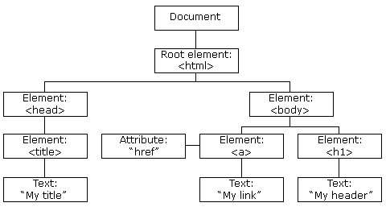

JavaScript and DOM
An analogy to describe JavaScript and its relationship to HTML and CSS.
JavaScript is like the puppet master or the maestro of HTML and CSS. It
allows the audience/the viewer to interact with the show. Let's use the
Greatest Showman as an example. HTML is the builder who created the circus
tent and introduced the content of the show- the actors and performers while
CSS is the costume designer and the one who decides how the whole show is
gonna look. It is JavaScript who orchestrates for the whole show to come
together and make an amazing entertainment for the guests to watch and
interact with. JavaScript is the Greatest Showman.
Explain control flow and loops using an example process from everyday
life, for example, 'waking up' or 'brushing your teeth' (but not those).
answer
Describe what the DOM is and an example of how you might interact with it.
The DOM is like the structure to a programme. It shows how something is
linked to another and what their relationship is to each other like in a
family tree, how there are parents, children and siblings. We can use
JavaScript to interact with the DOM to change things in HTML or CSS. We can
access and use the different 'objects' in the DOM by adding a dot (.) in
between. For example, if we wanted to use the h1 element in the photo below,
we can put document.html.body.h1. So we go down the tree, starting from the
great grand parent (document), the grant parent (html), the parent (body)
and the child (h1). We can also see their sibling (a) in the family tree. In
reality, we actually just use a querySelector() to find what we want easily.

Explain the difference between accessing data from arrays and objects.
answer
Explain what functions are and why they are helpful.
-
Functions are like an instruction manual to show you how to build a
table for example. It has all the items you need to build like the wood,
the nails and it tells you how to put those items together, the way it
is supposed to be and how it's supposed to look like.
-
When we define a function, we are like making the instruction manual for
the computer and when we call a function, we are telling the computer to
use the manual to actually build the table.
-
This is important because we need the computer to know what to do which
is why a function is helpful to have in your code.